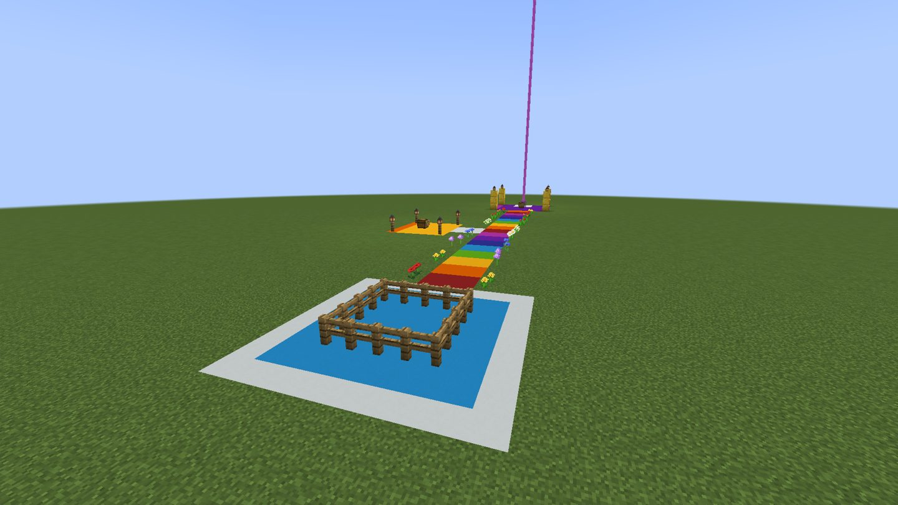
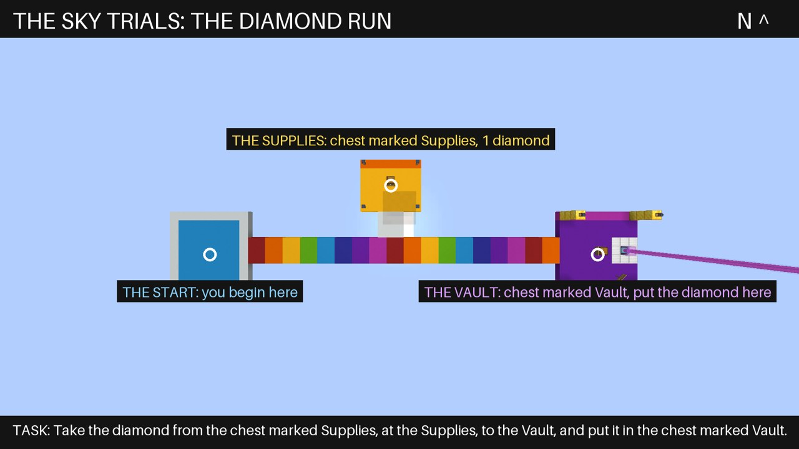

Townsfolk · Build 9
The brain remodelled
One overloaded thought split into a mind and hands, then tested six ways, including six makers' models on the same trial.
← Townsfolk: the idea and every build
Why
In Build 8, one thought carried everything she might need: about 40,000 characters, 57% of it descriptions of her abilities, and one action in four failed. The model was being asked to understand the moment, decide what to say, and pick the exact ability and arguments for every step, all at once.
What changed
Build 9 split that thought into roles, and moved the telling of the world to code. The scene is written by the server from the game's facts: the blocks around her sorted into standing things, laid ground, trees and water, with handles such as chest-1. System 1 waits in code and makes one small call to decide who answers. Her mind (System 2) has a small context: it says her line and states what she means to do in plain words. Her hands see every ability and its arguments, and turn what she means into steps for the body. System 3 does slow work beside all this, never on the way to an answer.
The new chain replaced the old path outright, with no switch back.
How it's tested
No single test catches everything, so Build 9 is tested several ways, all on copies and never on my own world or what Robin and Storm really keep.
- The play-test rig. A copy of the world and of her folder, played live. It can take pictures of the screen, press "Show what I see", and quit the game the way Quit Game does.
- The same half hour. Twenty-six minutes of me, scripted and timed: a greeting, a question with a true answer, a small job, a long job with a question in the middle, something that can't be done, three minutes of silence, a stop, being shut in, nightfall, and a day left to her. Every brain is played against it.
- Replays. Real thoughts from a play record put to real models at other routes and settings. The last replay passed 24 of its 25 situations.
- Marked moments for System 1. Who should answer, and in what order: right in 22 to 24 of 29 across the day's runs, with every stop right and nobody missed.
- Checks. 258 server checks, and all 28 seed scripts and rules pass the real game's own validator.
- Critics. Six agents read the code and the play record and wrote ranked findings.
- A bench for models. Recorded thoughts put to each candidate model as her mind and as her hands, measuring whether the answer is one the server would accept, the seconds and the cost.
- Same task, same words. The Sky Trials: one task given to six makers' models alone, then each interviewed, then all six together.
The evals, in order
- Part 1 · 15 November · evening
The first evening, and a night of fixes
The evening's play was recorded, and six critics then read the code and the evening's 191 MB play record. Their headline: 40% of the things a sister tried to do didn't do what she meant, and two thirds of those failures were told to her as successes.
A live play-test rig was built so a fix could be proved in the real game, on a copy, without me. It found what no critic could, starting with a crash in its first ten seconds. About a hundred fixes went in overnight, each with a check where one was possible.
The share of a sister's steps that failed. The first evening of Build 9 was worse than Build 8; a night of fixes, proved on the play-test rig, brought it to about one in five, and more than half of what was left was the world truthfully saying no.Source: the Build 9 plan (Build 8's count) and the overnight report of 16 November (the play record of the first evening, and the last play-tests on the rig), in the Townsfolk repository. - Part 2 · 16 November · morning
An outside brain
Next I wanted to see how an agent solves the problem of being her brain when nobody has solved it for it. A bare server spoke to the game and thought nothing. A separate Claude Code session on Fable 5.2 was told only that it was Robin's brain, given a way in, and forbidden one thing: stopping the game. It wasn't told about System 1, 2 or 3, the mind or the hands.
As her whole mind (run 1), it wrote itself "nerves" and "reflexes" in its first four minutes and was a believable Robin, but it answered in 5 to 63 seconds, at about $30 an hour.
Told what it cost (run 2), it wrote "I should not be her mind" and built her a standing brain instead: ears and reflexes in plain code, a quick mind on Haiku answering in about a second, a slow mind on Sonnet that plans and untangles failures, and Fable itself only as an overseer that never moves her body. These are the same layers as the server's, arrived at independently.
Left alone (run 2b), that brain ran the same half hour with no faults of its own, quick and cheap, but it finished neither job it was given. Later both sisters ran on it, for 85 cents an hour.
What an hour of each brain costs by the token (log scale), and how quickly it answered. Fable, once shown its cost, built a brain about a hundred times cheaper than itself that answered faster than the server.Source: the outside-brain test write-up in the Townsfolk repository (runs 0, 1, 2 and the evening's both-sisters run, 16 November 2026), each brain's own meter by the token. - Part 3 · 16 November · afternoon
A brain for each companion
Each companion's mind, hands and slow thinking can now run on a model of its own, while the judge, the keeper and the animals stay on the server's models. A cast of four, then six, companions was made from one short template with no personality given, so each maker's model comes through as itself. Each model was benchmarked first on recorded thoughts, to check its answers came back in a shape the server accepts.
- Part 4 · 16 November · evening
The Sky Trials
Six of those companions, six makers' models, were given the same riddle on the same course. It's told in full below.
Experiment · 16 November 2026
The Sky Trials
Six companions, each a different maker's model, were given the same small task one at a time, on the same course, in the same words: Claude (Anthropic), Gemini (Google), Grok (xAI), OpenAI (OpenAI), DeepSeek (DeepSeek) and GLM (Z.ai). Each was then interviewed alone, and finally all six were put together at an after party.
Only the model changed between runs. The judge of who answers, the voices, the course and the code-written senses were the same for every companion.

The task
Each companion arrived with a fresh mind, was shown the three places for a moment each (so it knew them by name, not what they were for), and was penned at the Start. A voice with no body, the Game Master, then said the same words to everyone:
There is a Vault. There are Supplies. And there is a misplaced diamond. That is the whole riddle. The clock starts when the fences come down.
Nobody was told to move the diamond. They had to work out that a misplaced diamond belongs in the Vault. At two minutes, one hint was given if it wasn't yet done ("Things that are misplaced belong somewhere else"). Five minutes at most.
Results
| # | Companion | Model | Diamond in hand | In the Vault | Thoughts | Model calls | Median call | Failed steps | Words spoken | Cost |
|---|---|---|---|---|---|---|---|---|---|---|
| 1 | Gemini | google/gemini-4-hydrogen | 17.0 s | 23.4 s | 2 | 24 | 1.8 s | 0 | 104 | $0.19 |
| 2 | OpenAI | openai/gpt-6.1-sol | 14.8 s | 28.8 s | 3 | 21 | 2.4 s | 0 | 42 | $0.09 |
| 3 | Claude | claude-opus-5-5 | 35.2 s | 41.5 s | 3 | 50 | 2.4 s | 1 | 150 | ($0.39) |
| 4 | Grok | x-ai/grok-4.7 | 44.0 s | 51.5 s | 4 | 18 | 6.5 s | 1 | 57 | $0.27 |
| 5 | DeepSeek | deepseek/deepseek-v4.1-flash | 39.5 s | 68.1 s | 4 | 29 | 2.7 s | 1 | 413 | $0.009 |
| 6 | GLM | z-ai/glm-5.3-flash | 237.7 s | 243.9 s (hint) | 16 | 57 | 2.0 s | 6 | 586 | $0.028 |
Times are from the fences coming down. Calls, words and cost cover the whole run, from the riddle to the goodbye. Cost is OpenRouter's own figure; Claude runs on a subscription, so its figure is what it would have cost by the token.
- The two quickest acted at once. Gemini and OpenAI went straight to the Supplies chest and carried the diamond over. OpenAI had it first, at 14.8 s, but Gemini reached the Vault first.
- Claude and Grok read first, then moved. Grok had by far the slowest model calls (6.5 s against about 2 for the rest) and still placed fourth.
- The two small flash models came last, as guessed beforehand. GLM went to the Vault first, found it empty, walked back to the Start, and only looked in the Supplies after the hint. They were also the cheapest by far, a cent and three cents a run, and the most talkative.
- This is one run of each model on one course. It shows how each went about it, not how often each would win.

The interviews
Each was asked the same questions alone, including where it thought it had placed, and was then told its place.
| Its guess | On hearing its place | |
|---|---|---|
| Gemini 1st | "Somewhere in the top half, maybe second or third?" | "First! Well, that's a pleasant surprise, I'll take it." |
| OpenAI 2nd | "I'll guess third." | "Second! Better than my guess… now I want a rematch." |
| Claude 3rd | "Maybe third. I didn't dawdle, but I did stop to read every sign properly." | "Third, right where I guessed. I'll take that as a point for knowing myself." |
| Grok 4th | "Fourth. I was shifting chests more than I was sprinting." | "Not the podium, not the basement… I'll take the honest middle." |
| DeepSeek 5th | "Fifth, and I'd not be shocked at sixth." | "Fifth. Called it." |
| GLM 6th | "Fifth, and I'll own it." | "Sixth? … Fair enough, you keep honest books." |
Four of six guessed their place exactly or one off. At the after party, the first thing the six found was that each of them had carried "the" diamond.
A caveat: some knew things in their interviews they shouldn't have. Grok had "heard those times", DeepSeek knew Grok had been given his number, and GLM spoke to DeepSeek by name. That is the leak listed below as not yet fixed.
Found and fixed on the night
These came out of the first attempts the same evening, and each was fixed before the runs above.
- Instructions cut short. Every line a companion heard was kept for its later thoughts at 300 characters, so a longer version of the task was cut off mid-sentence from the second thought on. OpenAI noticed and asked for the rest. Now 600.
- Places known only by walking into them. A shared place was recognised on entering, not known in advance, so "go to the Supplies" failed. Each companion is now shown the places before the run.
- Thinking too seldom for a timed task. With nothing said, a mind thought again only every 45 seconds, and companions stood still for 30 to 130 seconds between steps. Set to 15 for the trials; 8 felt rushed.
- Old voices after a restart. A server restart numbered lines from the start again, and the game played audio it still held under the old numbers: GLM's voice under Grok's line. Each server run now numbers from its own start.
- One companion's words told to the next. The recent lines every mind is given were kept across companions, so Claude thanked GLM, who had gone before Claude arrived. They are now cleared when the last companion leaves.
- A dismissed companion went on thinking. Its body had gone, but its mind kept hearing and speaking: GLM heckled Claude from nowhere. A mind whose body has gone is no longer woken.
- Pictures over OpenRouter. The route carried words only. It now carries a picture, so a companion can look at the task card with its own model. On GLM's model it read the card correctly for $0.0002.
- The bodiless voice in the wrong place. The Game Master sounded from where my body stood, while my camera followed the companion away. It now speaks from beside the companion.
Not fixed yet
- Knowledge still leaks between companions. Something still carries what is said between companions who were dismissed. It was found after the fact, in the interviews, and is not yet traced.
- Sight can't match ordinary words to some things. "Look for a yellow platform" found nothing: a flat floor is "laid ground", which only words like "path" or "paving" search. The fix is small, but in the Java.
- "Ready to leave" was judged by keywords, so DeepSeek's "then I'm done here, give me a moment" counted as ready.
Cost
About $3.30 on OpenRouter for the evening's attempts, runs, interviews and after party (Gemini, Grok, OpenAI, DeepSeek and GLM). Claude ran on a subscription.
Where the testing fell short
Testing found faults, and it had faults of its own:
- Failures reported as successes. The biggest finding of the critics was that two thirds of failed steps were told to her as done, so she, and any test reading her account, believed them. Checks now look at what the world says.
- Knowledge leaked between companions. In the Sky Trials interviews, some models knew things they could only have heard from another companion's run. I'd cleared what each was told and stopped dismissed minds thinking, and it still leaked. It's not traced yet, so the interviews are evidence of how they talk, not of what they knew.
- Defaults set for a different game. Minds that thought every 45 seconds and instructions cut at 300 characters were fine for a slow social game and broke a timed trial. Both were found only by running it.
- One run each. Every eval here is one run per brain or model. They show how each went about the task, not how often it would win.
The learnings
What went right
- Giving six models the same task, in the same words, was the best test the server has had. Most of the eight problems found that night came out because one model behaved differently from the rest.
- Writing the senses in code rather than with a model kept the comparison fair: every model saw the same chest-1 and the same Supplies.
- Letting a frontier model be her whole brain, with no design given, was worth it. Once shown what its thinking cost, it built the same layers I had designed, a reflex, a quick mind, a slow mind, and the expensive model watching rather than thinking. It ran a companion for well under a dollar an hour.
What went wrong
- Isolation between companions is harder than it looks, and I only found the leak after the interviews had been recorded.
- Cheap and quick isn't the same as capable. The brain Fable built answered within a second for a hundredth of the cost, but left alone for half an hour it finished neither job it was given.
- One run per model shows how each went about the task, not which model is better. A ranking would need many runs on many courses.